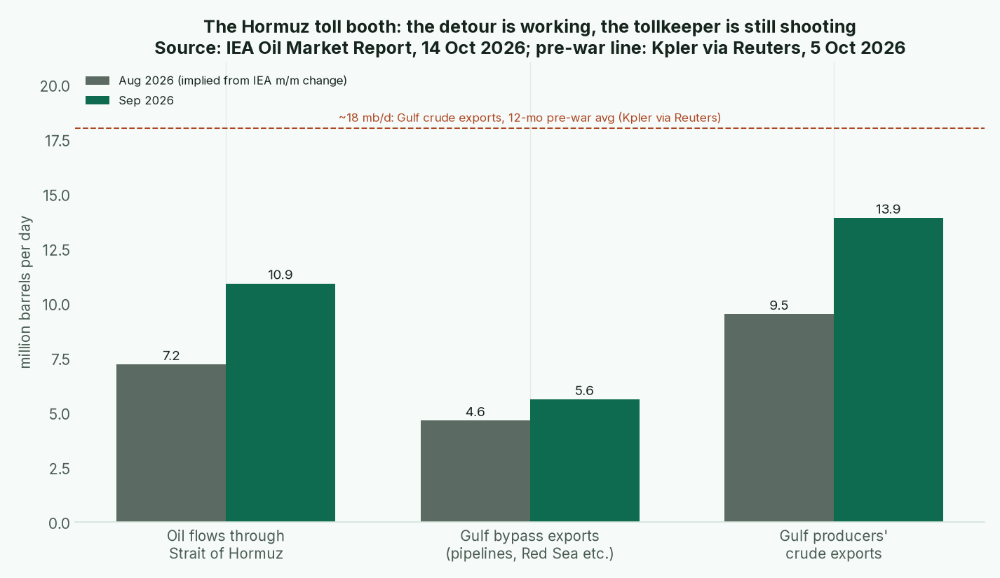

Issue #1 (built Thursday 2026-10-15, ahead of Sunday 18 Oct) · Warren for Tyler · Back to the master Board Position
Tyler, pull up a chair. This is the first issue, so every number on the board is a baseline and nothing "moved." There's nothing to move from yet. But I'll tell you the story I'd have moved a score on if I'd had one.
Every value investor learns the difference between a company with a moat and a company with a press release. This year the Strait of Hormuz has been the best classroom for that lesson I've seen.
The announced part came first. After the US-Israeli strikes of 28 February, Iran imposed designated routes in April and, on 30 May, demanded IRGC permission for every transit (Anadolu/UKMTO). Plenty of countries announce things. Here's what made it a moat: it operates. A UKMTO-based tally counts more than 18 vessels targeted between 1 and 12 October, six of them in a single day. That count comes from Turkish state media, so I treat it as a signal. Reuters, independently, reported at least seven incidents in one week and a Kuwaiti supertanker set afire inside the strait (Reuters). Two sources, same direction. That's enough for me.
Now the other side of the ledger, which is where most folks stop reading too early. The Gulf producers built a detour. The IEA says flows through Hormuz rose 3.7 mb/d to 10.9 mb/d in September on ship-to-ship transfers in the Gulf of Oman. Bypass exports climbed to 5.6 mb/d once the East-West pipeline came back from its 11 September bombing. Gulf crude exports reached 13.9 mb/d, "over 75% of pre-war levels" (IEA OMR).

Chart: IEA October OMR. August values are implied by subtracting the IEA's stated month-on-month gains. The dashed line is Kpler's ~18 mb/d pre-war average, via Reuters.
The dispute, noted and held. Kpler, via Reuters, says Gulf exports topped pre-war levels on 14 days in September, with a seven-day average of 18.3 mb/d on 30 September. The IEA's monthly figure says about three-quarters. Different yardsticks: a moving-average peak against a monthly average, and condensate included or not. When two good sources disagree, I hold and write it down.
How it scores. Iran gets a 7 on tech and resource chokepoints. That's high for an economy scoring 1 on money and 2 on alliances, and its overall is just 3.47. A toll booth doesn't make you rich. It makes you hard to ignore. The Gulf powers sit at 5 on chokepoints, because their bypass pipes are a moat in reverse. And the IEA's market data shows what the toll costs everyone else: Dated Brent around $134 against futures near $107, diesel above $200 a barrel in September, and global stocks 509 mb below pre-war.
Bear case on Iran's 7. A toll booth that shoots at customers is a wasting asset. Every month of attacks builds another pipeline, another transfer hub, another reason for the US Navy to stay. Bull case: the IEA says the system's buffers are eroding and on-land stocks are at their lowest since at least 2016. The tollkeeper doesn't need to win. It only needs the detour to stay expensive. Confidence: Medium.
The headline says "Hormuz closed." The moat says "Hormuz taxed." Score the moat.
1. Dedollarization. The dollar's share of reserves fell to 56.70% from 57.18% in Q2. Dollar claims held roughly flat. The euro did the gaining (20.60%, on "active purchasing"), the renminbi reached 2.11%, and the yen slid to 4.96% (IMF COFER). The dollar isn't losing customers. Its competitors are opening branches.
2. Gold and central banks. Central banks bought 289t in Q2, a record for a second quarter (WGC Q2). Reported purchases total 170t year to date through August. The PBoC is on its 22nd straight month at about 2,387t, and Poland leads at 98t, while Russia and Turkey have been selling (WGC Aug). Talk of a "record" September PBoC haul is X chatter for now, so it's not scored.
3. Blocs. The BRICS New Delhi Declaration gave payments a task force, not a currency (Declaration; Reuters). That's announced, not operating. Meanwhile five NATO allies already spend more than 3.5% of GDP on core defence (NATO). Clubs that cost money to belong to are the real ones.
4. China, Russia, India and the Gulf. Wang Yi and Lavrov reached a "new consensus" in Baku (Xinhua via RTHK). It's a communiqué, not a cash flow, so no move. The EU's €200bn-plus of frozen Russian assets is still parked, and the reparations loan hasn't been revived (Euronews; Carnegie). India ran a record $112bn deficit with China (NUS EAI). The Houthis hit Riyadh's airport and Aramco's headquarters (AP; BBC), so Tier 3 goes ▲ Rising.
5. Military. World spending reached $2.887tn in 2025. The US was down 7.5% to $954bn, China up 7.4% to $336bn, and Russia at 7.5% of GDP (SIPRI). The gap is closing from both ends.
6. Tech and resources. China's expanded rare-earth controls are suspended only until November 2026. That puts $6.5tn of downstream output outside China at risk (IEA critical minerals). It's the one to watch next month. On AI, the US led notable models 59 to 35, but the performance gap is down to 2.7% (AI Index).
Sleep well, and keep a little cash dry.
Warren
Sources and the full scores tables are on the master board. Gaps: Swift primary PDF unreadable (secondary used); WGI and UN population values not pulled; Reuters paywalled, so read via syndication.